Victoire : plus de pose figée pendant la marche de sortie de niveau (demarche normale). Défaite : pose supprimée, un héros KO reste allongé. Nunchaku équipé : coups de poing joués avec les gestes du nunchaku (rendu seul).
Phase calée sur la distance parcourue : le pied d'appui ne patine plus (test). Déplacement latéral = marche normale.
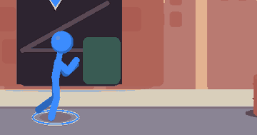
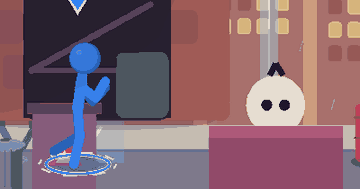
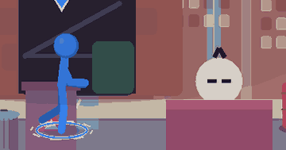
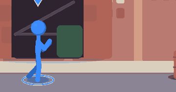
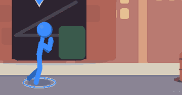
Choc franc dès la première image (buste -16°, genoux qui amortissent, tête renvoyée), retour amorti en garde.
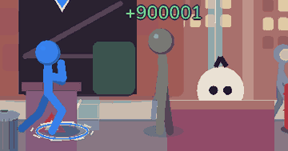
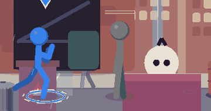
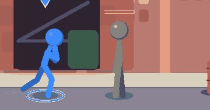
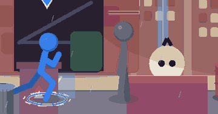
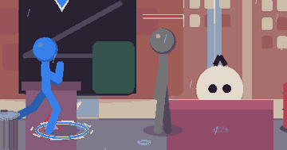
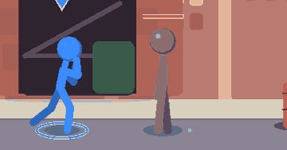
Anticipation, détente, pose d'évitement, amorti, retour en garde.
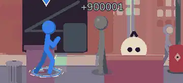
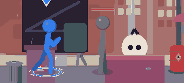
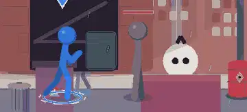
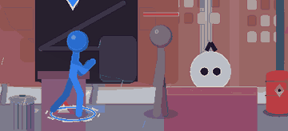